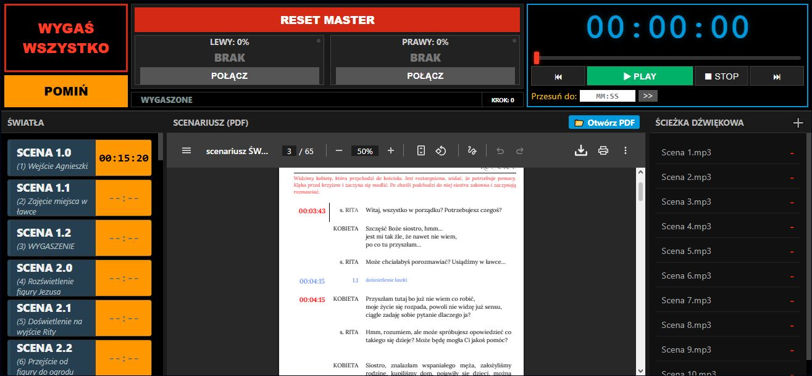
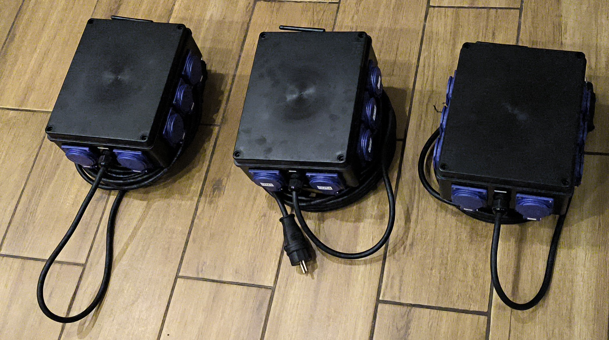
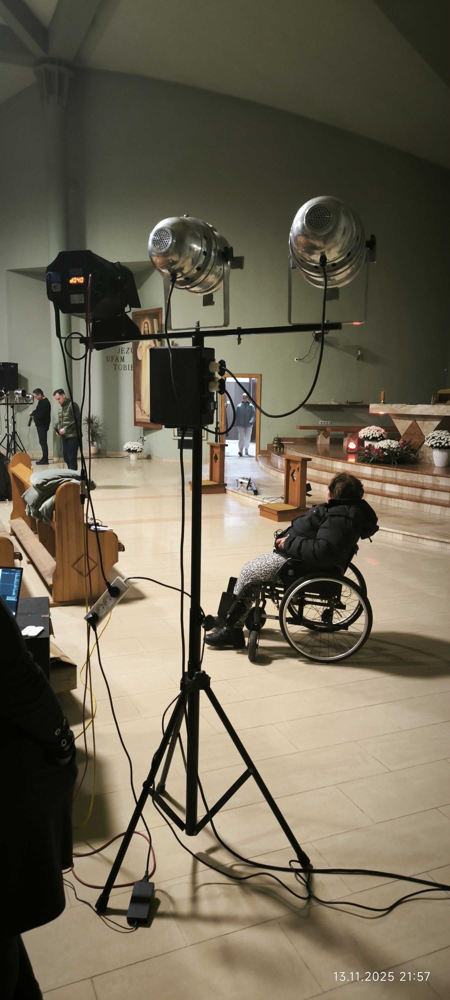

ESP32 Mesh Network & Web Audio API Architecture

Developed pro bono for a local amateur theatre group, this project aimed to replace expensive, proprietary lighting consoles with a flexible, browser-based system. The challenge was to coordinate lighting (DMX, PWM, SSR) and multi-track audio playback with millisecond precision, controllable from any smartphone or laptop during rehearsals and live shows.
The system utilizes a decentralized Master/Slave architecture communicating via the ESP-NOW protocol. This topology eliminates the need for long, heavy cable runs from the balcony to the stage, keeping high-power switching local to the fixtures.
Master Node (Balcony/FOH): Located at the operator booth. Controls long-range spotlights, serves the Web HMI, and orchestrates the audio sync.
Slave Nodes (Stage): Mounted directly on lighting tripods. Each unit handles local dimming (PWM) and high-power switching (SSR) for the stand it is mounted on.
ESP-NOW Protocol: Connectionless, low-latency (< 10ms) communication ensures stability even in WiFi-congested environments.
Safety: Security is enforced via MAC Address Binding. AC output stages include RC Snubbers and Zero-Crossing detection for inductive load stability.
The interface runs directly from the ESP32's SPIFFS storage but leverages the client browser's power for heavy lifting.


The system has been successfully deployed in full-scale productions with hundreds of attendees. Below are recordings from live performances driven entirely by this custom architecture.
This system demonstrated that low-cost embedded hardware (ESP32), when combined with robust software architecture (ESP-NOW + Web Technologies), can compete with commercial industrial controllers in specific niche applications, offering superior flexibility for amateur groups.